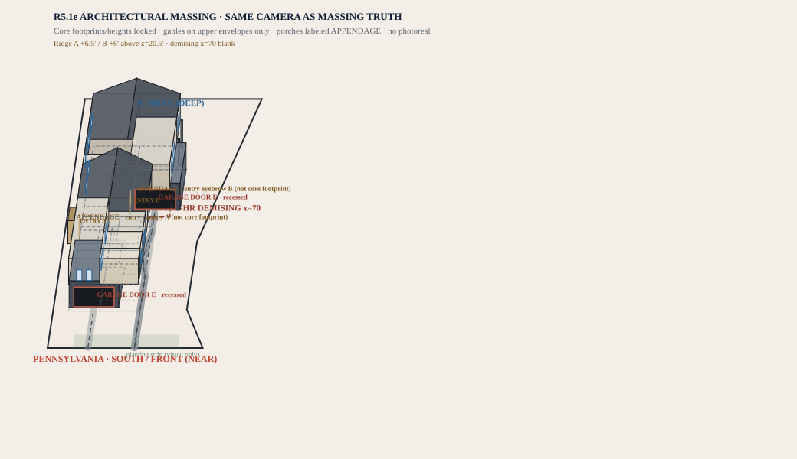
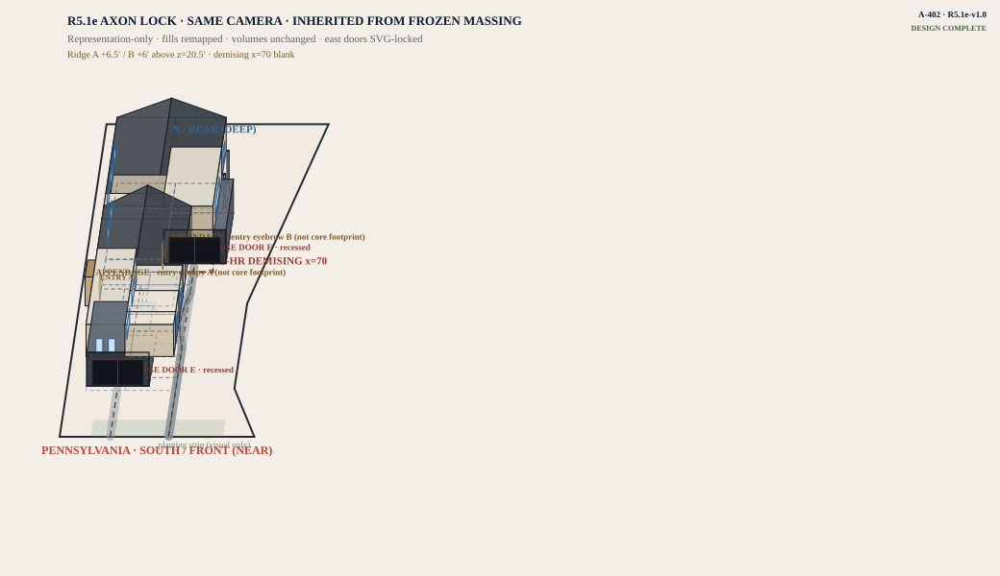

Pondy Flats · Design 1 · Massing & axon · R5.1e-v1.1 · not a permit set
A-401 · A-402 · complete package
Massing & axon
Same camera as every Lot 2 3D sheet: Pennsylvania near (bottom of the drawing), rear of the lot deep (top). A prettier picture must not move these volumes.
How to look at this. You are looking toward the rear of the lot. The street is the near/bottom edge. Home A is closer to that edge. Covered stalls and garage doors are part of the lock, not decoration.

